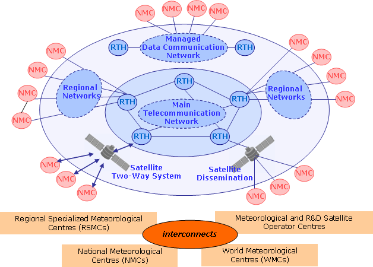
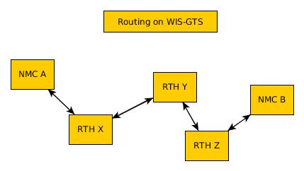
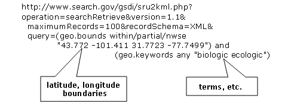
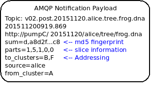
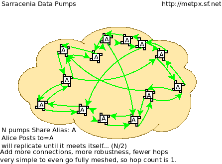
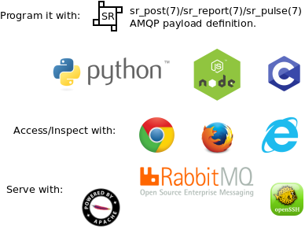

Mesh-Style Data Exchange for the WIS-GTS in 2019
Originally part of a demonstration to the WMO committee on message queueing protocols. While this proposal was not retained at that time, it has served as the basis for much discussion since.
Executive Summary
Over the past decade, the World Meteorological Organization (WMO) Information Service WIS Part 1 has implemented meta data catalogues for some world-wide meteorological datasets. In WIS-DAR, Discovery, Access, and Retrieval, the emphasis on this early work was on Discovery, as this was a major difficulty. In terms of actual data exchange, the pre-existing network: the Global Telecommunications System (GTS) has remained the WMO’s accepted method to circulate weather data in meteorological real-time [1] used to achieve Access and support Retrieval. It does so by established bi-lateral agreements among individual members.
The pre-existing network feeds pre-existing systems that operate on different premises from WIS, and there isn’t a particularly good mapping from D to A, and R today. Use of WIS metadata to drive real-time data exchange is not efficient, and GTS data is not easily interoperable with other industries’ mostly web-based technologies.
This brief suggests that a mesh-like network of web servers is possible now because of great advances in technology that reduce the need for rules and structure for international exchange of meteorological data. Previously, technological limitations placed stringent constraints on international data exchange. These days, effective international data exchange can be arranged with fewer interveners, less hierarchy, less coordination. A more loosely coupled and flexible interconnection strategy makes it much easier for members to exchange new datasets in a systematic way, without having to develop the bi-lateral or multi-lateral exchange agreements. Indeed often, the GTS is circumvented because it is so ill-suited to such exchanges.
Members that agree to exchange data, can do so directly, which completes the dream of the WIS. The existing work on WIS, standardizing metadata exchange is completed by adding the exchange of the underlying data using standardized open methods, with a straightforward mapping from the metadata. As the proposed implementation uses existing standards, the WMO does not need to define any additional ones, and interoperability and access for other players in the broader society should be straightforward. The sr3_post protocol, and a number of existing implementations of it, are a great fit.
While it is believed that sr3_post protocol has great potential to improve WMO data exchange, it will take a few years to adopt it, and prior to adoption, there needs to be agreement on the file tree content. Today, the next step would be to find some partner countries with which to engage in some experimental data exchanges to validate the approach, and collaboratively determine implementation details.
GTS was Designed Long Ago
The World Meteorological Organization (WMO) Information Service (WIS)’s Global Telecommunications System (GTS) is the WMO’s accepted method to circulate weather data in meteorological real-time [1] It does so by pre-established bi-lateral agreements about who circulates what to whom. When data arrives, it is sent to the proper destinations immediately. In hardware terms, the GTS used to be a set of point-to-point links. It is, in general, very reliable and has good performance for the sorts of data for which it was envisioned.
The GTS successfully and elegantly applied the technologies of the 1940’s to obtain world-wide exchange of weather data, most obviously, to enable commercial air travel to expand exponentially over the succeeding decades. It was made in a world of expensive point-to-point telephone links, very low bandwidth, very little computational power, and few existing standards for reliable data transfer. Today, The underlying technologies embodied by Internet and Regional Main Data Communications Network (RMDCN) (which have already subsumed the physical links of GTS) are completely different: bandwidth and storage are relatively cheap, computing power is cheaper, point-to-point links are now more expensive than multi-point clouds. Today’s WMO members want to exchange orders of magnitude more data types and higher volumes at higher speed.
The weather community has, in the past, needed to create standards because no similar need in the rest of industry existed. Over the last few decades, as internet adoption has broadened and deepened, horizontal solutions for most of the technical issues addressed by WMO standards have emerged. The WMO’s strategic direction always has been and will continue to be to use technologies from the wider world and not define their own standards unnecessarily.
GTS is Limited & Inflexible
In the traditional GTS, when new data is made available by a National Meteorological Centre (NMC), it needs to issue notices, and likely discuss with their Regional Telecommunications Hub (RTH), about accepting and routing the new data. The RTHs must discuss amongst each other whether to exchange the data, and other NMC must further request from their RTH. For NMC A to make data available to NMC B, the GTS staff at both NMC’s and all intervening RTHs must agree and action the request.
Also, the routing tables at each NMC and each RTH are theoretically, but in practice, not easily, inspectable. It may be that the product NMC B is looking for is already available at their local RTH, but neither A, nor B have any effective way of determining that, other than asking the administrators of B’s RTH. Manual routing is ineffective, opaque and human resource intensive.
Lastly, the GTS has a maximum message size, which though it was raised from 14,000 bytes to 500,000 bytes in the last few years, is still very limiting. This rules out many modern important data sets (e.g. RADAR, Satellite, NWP). WMO doesn’t need its own data transport, as is demonstrated by many members’ use of protocols without such limitations, adopted from the broader internet, such as FTP, SFTP, and HTTP. Even more often, such transfers are accomplished by bi-lateral arrangement, as transfers of larger datasets cannot be expressed in current GTS protocols.
The initial WIS, as formulated over a decade ago, was in part an attempt to address this opaqueness by introducing some Information Management (IM) concepts, and support for DAR: Discovery, Access, and Retrieval. All WMO members want to know is which data is available from which centres. So we publish metadata to Global Information Service Centres, where the world’s real-time weather information is available and some means of retrieval is specified.
When dealing in the abstract, without time constraints, add/or with small datasets, retrieval time does not matter, but the access penalty imposed by using databases for individual retrieval grows with the number of items stored and the number of queries or retrievals to be sustained. Initially, WIS was most concerned with getting higher visibilty of data, understanding what data was available. WIS Part 1 primarily implemented a metadata layer, while the GTS has persisted to transfer actual data. Once WIS Part 1 was in service and DAR was available, which at first blush appears much easier and friendlier, why didn’t everyone just use DAR to replace the GTS?
The WIS architecture tends to concentrate load at the GISCS, whether they want it or not. Even assuming they want it, answering large volumes of queries in such an architecture is a problem. The mental model for this is a database and each retrieval is conceptualized as a query. From computational complexity theory[2]_, each query is often an O(N) operation (or in the best case of perfect indexing, O(log N)) and retrieval of specific items by their key is also, at best, O(log N).
To perform Retrieval (the R in DAR) of all the items from an index, one at a time, the best algorithm has complexity N * log N. The best case only arises if the indices are properly designed for the access method intended. In practice, without careful design & implementation, the performance can devolve to N**2.
Databases are Optimal for Fixed Sized Records. No One Uses Them That Way
There are typically two major schools of thought on meteorological data storage: Files and Databases. For many years, data was relatively small, there were relatively few datatypes, and they fit in small databases and with enough analysis one could normalize them down to fixed size fields.
Relational databases were invented a decade or two after the GTS, and they optimize storage and retrieval of fixed size data. They achieve near optimal performance by careful selection of the data model and extensive use of fixed size fields. In practice, the use of fixed size fields turns out to be a difficult constraint to satisfy and many interesting data sets, especially on systems whose primary function is data transmisssion, are most logically stored as arbitarily sized byte sequences, generally termed: Binary Large Objects, or BLOBS. When one stores BLOBS, a database becomes algorithmically a little different from a file system.
Essentially BLOBS are an indexed list of byte streams. Once a database uses BLOBS, it incurs the same overhead for data retrieval as a properly used file system. Regardless of the storage method, the cost of retrieval is going to be O(log N) for a known key. In a file system, the key is the name. In a DB, the key is an object-id or index value. If one wishes to use multiple indices, then one can still use a database, which is largely what WIS Part 1 is. It is simply a standard pratice to store the actual data in BLOBS, and file systems are a competitive method of storing those.
Over time, as data items grow in individual size, it makes progressively more and more sense to store them in file systems, and to confine use of database systems to store metadata and indices that point to the data items stored in files.
Internet Push is a Poor Fit for Large Feeds
So called Push technologies are actually Pull. A client asks a server if they have new data available for them. The server responds with the list of new data available, then the client pulls the data. This means that an entity storing data has to retrieve the items from the data store (with an O(log N) cost to each retrieval.) As the domain is real-time processing, the time for data to be obtained by a client is also relevant, and bound by the maximum frequency that a client is allowed to ask for updates. In general, the ATOM/RSS protocols expect a minimum interval between polling events of five minutes.
Each polling event requires the server to examine its database for all matching entries, this search is likely an order N operation. So the responses to polling requests are expensive, and the retrievals from the data system are likewise expensive, which likely motivates the usual discouragement of rapid polling.
In the best case, indices based on time will be present, and one will be able to search table with that dimension and incur log(N) operations to find the earliest observation to retrieve, and then walk forward along that index. In many practical cases, databases are not indexed by time, and so the initial search is for all stations, and then one must examine the time for the entries retrieved, which will incur N**2 operations, and in some cases it can be even worse.
The actual cost of serving a client depends critically on the server’s indices being optimally constructed. These characteristics are hidden in a database and are not easily inspected by anyone but the database administrator.
Store And Forward is Often Better in Practice
“Store and Forward” is a term we will use here to denote technologies that deal with data on receipt, in contrast to simply storing the data and awaiting clients’ polls. Real-time systems such as the GTS get around the retrieval expense problem by storing and forwarding at the same time. When a datum is received, a table of interested parties is consulted, and then the forwarding is done based on the data already “retrieved”.
The cost to forward an item to a given client is closer to O( log N ).
This works as an optimization because one is forwarding the message at exactly the time it is received, so the entire lookup and search process is skipped for all those known consumers. For comparison, the polling web standards standardizes the cost of search at every polling interval.
The cost of the search is highly variable and not under server control. Poorly structured queries (e.g. by station, and then time) can result in an N*log(N) query or even N-squared complexity.
This is especially acute for weather alert information, where a high polling frequency is a business need, but the volume of data is relatively low (alerts are rare). In such cases the polling data can be 10 times or even 100 times the amount of data transfer needed to send the warnings themselves.
In practice, the load on servers with large real-time flows to many clients will be orders of magnitude lower with a real push technology, such as the traditional GTS, than supporting the same load with Internet Push technologies. A separate but related cost of polling is the bandwidth for the polling data. By forwarding notifications on receipt, rather than having to service polls, one reduces overall load, eliminating the vast majority of read traffic.
A real-world example of bandwidth savings, from 2015, would be that of a German company that began retrieving NWP outputs from the Canadian datamart using web-scraping (periodic polling of the directory.) When they transitioned to using the AMQP push method, the total bytes downloaded went from 90 Gbytes/day to 60 Gbytes per day for the same data obtained. 30 GBytes/day was just (polling) information about whether new model run outputs were available.
The requirements for a store and forward system:
TCP/IP connectivity,
real-time data transmission,
per destination queueing to allow asynchrony (clients that operate at different speeds or have transient issues),
application level identity guarantees.
In addition, the ability to tune subscriptions, according to the client’s interest will further optimize traffic.
In terms of internet technologies, the main protocols for real-time data exchange are XMPP and websocket. XMPP provides real-time messaging, but it does not include any concept of subscriptions, hierarchical or otherwise, or queueing. Web sockets are a transport type technology. Adopting either of these would mean building a domain specific stack to handle subscriptions and queueing. The Advanced Message Queueing Protocol (AMQP) is not web technology, but it is a fairly mature internet standard, which came from the financial industry and includes all of the above characteristics. It can be adopted as-is and a relatively simple AMQP application can be built to to serve notifications about newly arrived data.
While AMQP provides a robust messaging and queueing layer, a small additional application that understands the specific content of the AMQP messages, and that is the value of the Sarracenia protocol and application offerred as the protocol’s reference implementation. Sarracenia sends and receives notifications over AMQP. That application neither requires, nor has, any WMO-specific features, and can be used for real-time data replication in general.
A Sarracenia notification contains a Uniform Resource Location (URL) informing clients that a particular datum has arrived, thus inviting them to download it. The URL can advertise any protocol that both client and server understand: HTTP, HTTPS, SFTP for example. If new protocols become important in the future, then their implementation can be done with no change in the notification layer.
As these notifications are sent in real-time, clients can initiate downloads while the datum in question is still in server memory and thus benefit from optimal retrieval performance. As the clients’ time of access to the data is more closely clustered in time, overall i/o performed by the server is minimized.
A notification also contains a fingerprint, or checksum, that uniquely identifies a product. This allows nodes to identify whether they have received a particular datum before or not. This means that the risks of misrouting data are lower than before because if there are any cycles in the network, they are resolved automatically. Cycles in the connectivity graph are actually a benefit as they indicate multiple routes and redundancy in the network, which will automatically be used in the event of node failure.
With AMQP Notices on a Standard File Server
Several robust and mature protocols and software stacks are available for many data transport protocols: FTP, HTTP, HTTP(S), SFTP. A file server, as a means of Transporting data is a solved problem with many solutions available from the broader industry. In contrast to data transport, pub/sub is an atomized area with myriad niche solutions, and no clearly dominant solution.
The Advanced Message Queueing Protocol is an open standard, pioneered by financial institutions, later adopted by many software houses large and small. AMQP is a replacement for proprietary message passing systems such as IBM/MQ, Tibco, Oracle SOA and/or Tuxedo. RabbitMQ is a prominent AMQP implementation, with deployments in many different domains:
Rabbitmq provides a mature, reliable message passing implementation currently, but there are many other open source and proprietary implementations should that ever change. AMQP brokers are servers that provide message publish and subscribe services, with robust queuing support, and hierarchical topic based exchanges.
Each Server runs a broker to advertise their own contribution, and they subscribes to each others’ notification messages. Advertisements are transitive, in that each node can advertise whatever it has downloaded from any other node so that other nodes connected to it can consume them. This implements mesh networking amongst all NC/DCPC/GISCs.
An AMQP notification layer added to the existing file transfer network would:
improve security because users never upload, never have to write to a remote server. (all transfers can be done by client initiated subscriptions, no write to peer servers needed).
permit ad-hoc exchanges among members across the RMDCN without having to involve third parties.
can function with only anonymous exchanges, to eliminate the need for authentication entirely. additional explicit authentication is available if desired.
provide a like-for-like mechanism to supplant the traditional GTS (similar performance to existing GTS, no huge efficiency penalties).
in contrast to current GTS: no product size limit, can function with any format. inserting data is a matter of picking a file hierarchy (name)
transparent (can see what data is on any node, without requiring human exchanges). (Authorized persons can browse an FTP/SFTP/HTTP tree).
enable/support arbitrary interconnection topologies among NC/DCPC/GISCs (cycles in the graph are a feature, not a problem, with fingerprints).
Shorten the time for data to propagate from NMC to other data centres across the world (fewer hops between nodes than in GTS, load more distributed among nodes).
relatively simple to configure for arbitrary topologies (configure subscriptions, little need to configure publication).
route around node failures within the network in real-time without human intervention (routing is implicit and dynamic, rather than explicit and static).
And an Agreed Directory Tree
Similar to the choice of indices in databases, efficiency of exchange in file servers depends critically on balancing the hierarchy in terms of numbers of files per directory. A hierarchy which ensures less than 10,000 files per directory performs well.
Example server: http://dd.weather.gc.ca
The tree on dd.weather.gc.ca is the original deployment of this type of service. As an example of the kind of service (though the details would be different for WMO), it has directory ordering as follows:
There is an initially fixed base url: http://dd.weather.gc.ca/bulletins/alphanumeric/, Then the subdirectories begin: date (YYYYMMDD), WMO-TT, CCCC, GG, then the bulletins, whose content is:
Parent Directory -
[ ] SACN31_CWAO_111200__CYBG_42669 11-Feb-2018 12:01 98
[ ] SACN31_CWAO_111200__CYQQ_42782 11-Feb-2018 12:02 106
[ ] SACN31_CWAO_111200__CYTR_43071 11-Feb-2018 12:03 98
[ ] SACN31_CWAO_111200__CYYR_42939 11-Feb-2018 12:01 81
[ ] SACN31_CWAO_111200__CYZX_43200 11-Feb-2018 12:02 89
[ ] SACN43_CWAO_111200__CWHN_43304 11-Feb-2018 12:12 85
.
.
.
Note
These files do not follow WMO naming conventions, but illustrate some interesting questions. In WMO bulletins, one should issue only one bulletin with the AHL: SACN31 CWAO 111200 For circulation to the WMO, these individual observations are collected and indeed sent as a single SACN31 CWAO 111200, but that means delaying forwarding of CYBG, BYQQ, CYTR reports while we wait until the end of the collection interval ( 12:05? ) before emitting the collected bulletin. This datamart, for national use, offers individual observations as they arrive in real-time, appending the station id as well as a randomizing integer to the file name, to ensure uniqueness.
This is an illustration of an early prototype which remains in use. The actual tree for WMO use would likely be different.
Aside from the contents of the tree, the rest of the functionality proposed would be as described. One can easily subscribe to the datamart to replicate the entire tree as the data is delivered to it. While the application does not require it, the standardization of the tree to be exchanged by WMO members will substantially simplify data exchange. Most likely, an appropriate tree to standardize for WMO uses would be something along the lines of:
20180210/ -- YYYYMMDD
CWAO/ -- CCCC, origin, or 'Source' in Sarracenia.
00/ -- GG (hour)
SA/ -- TT
follow the naming convention from WMO-386...
If we have an ordering by Day ( YYYYMMDD ), then ORIGIN ( CCCC? ), then data types, and perhaps hour then the trees that result would be nearly optimally balanced, and ensure rapid retrieval. The optimal configuration is also clearly visible since this tree is can be inspected by any WMO member simply by browsing the web site, in contrast to databases, where the indexing schemes are completely hidden.
Nodes copy trees from each other verbatim, so the tree is the relative location on any node. WIS metadata pointers to the actual data can then be programmatically modified to refer to the nearest node for data, or a straight-forward search algorithm can be implemented to ask other nodes, without the need to resort to an expensive search query.
In AMQP, subscriptions can be organized into hierarchical topics, with the period character (‘.’) as a separator. For this application, the directory tree, with ‘/’ or ‘' as a separator replaced by AMQP’s separator is is translated into an AMQP topic tree. AMQP has rudimentary wildcarding, in that it uses the asterisk (‘*’) to denote any single topic, and the hash symbol (‘#’) is used to match any remainder of the topic tree. So examples of how one could subscribe selectively on a node are:
v02.post.# -- all products from all Origins (CCCC)'s on a node.
v02.post.*.CWAO.# -- all products from CWAO (Canada) on a node
v02.post.*.CWAO.WV.# -- all volcanic ash warnings (in CAP?) from Canada RSMC/VAAC.
Note
The topic prefix (beginning of the topic tree) is constant for this discussion. Explanation:
v02 - identifies the protocol version. Should the scheme change in future, this allows for a server to serve multiple versions at once. This has already been used to progressively migrate from exp, to v00, to v02.
post - identifies the message format. Other formats: report, and pulse. described elsewhere.
After this first level of filtering is done server side, Sarracenia implements a further level of client-side filtering using full Regular Expressions to either exclude or include specific subsets.
To exchange known data types, one needs only define the directories that will be injected into the network. Nations can adopt their own policies about how much data to acquire from other countries, and how much to offer for re-transmission. To propose a new data format or convention, a country uploads to a new directory on their node. Other countries that wish to participate in evaluating the proposed format can subscribe to the feed from that node. Other countries that start producing the new format add the directory to their hierarchy as well. No co-ordination with intervening parties is needed.
Should two countries decide to exchange Numerical Weather Products (NWP), or RADAR data, in addition to the core types exchanged today, they simply agree on the directories where this data is to be placed, and subscribe to each others’ node feeds.
Simple/Scalable Peer Configurations for Nations
Assume a mesh of national nodes with arbitrary connectivity among them. Nodes download from the first neighbour to advertise data, transfers follow the speed of downloading from each node. If one node slows, neighbours will get notification messages from other nodes that present new data earlier. So the network should balance bandwidth naturally.
National centres can have as much, or as little, information locally as they see fit. The minimum set is only the country’s own data. Redundancy is achieved by many nations being interested in other nations’ data sets. If one NC has an issue, the data can likely be obtained from another node. NC’s can also behave selfishly if they so choose, downloading data to internal services without making it available for retransmission to peers. Super national nodes may be provisioned in the cloud, for management or resource optimization purposes. These nodes will ease communication by adding redundancy to routes between nations. With mesh style interconnection, in the case of a failure of a cloud provisioned node, it is likely that connections between countries automatically compensate for individual failures.
There is also little to no requirement for the super-national GISC in this model. Nodes can be established with greater or lesser capacity and they can decide for themselves which data sets are worth copying locally. As the subscriptions are under local control, there is a sharply reduced need for co-ordination when obtaining new data sets. There is also no need for a node to correspond uniquely to a national centre. There are many situations where members with more resources assist other members, and that practice could continue by having nodes insert data onto the GTS on other countries’ behalf. Redundancy for uploading could also be accomplished by uploading to multiple initial sites.
If there are nodes that, for some reason, do not want to directly communicate, they do not subscribe to each others notification messages directly. Each can acquire data safely through intermediaries that each is comfortable with. As long as there is a single path that leads between the two nodes, data will arrive at each node eventually. No explicit action by intermediaries is needed to ensure this exchange, as the normal network will simply route around the missing edge in the graph.
If there is misbehaviour, other nodes can cease subscribing certain data on a node or cease to bring in any data at all from a node which is injecting corrupt or unwanted data. It could happen that some nations have very good bandwidth and server performance. The motivation would be to obtain the data most quickly for themselves, however by implementing this excellent service, it attracts more demand for data from the rest of the world. If one node feels they are shouldering too much of the global load of traffic exchange, there are many straight-forward means to encourage use of other nodes: not posting, delayed posting, traffic shaping, etc… All of these techniques are straight-forward applications of industry technology, without the need to resort to WMO specific standards.
Using An Open Reference Stack
A sample national mesh node (Linux/UNIX most likely) configuration would include the following elements:
subscription application to post national data to the local broker for others ( Sarracenia )
subscription application connects to other nodes’ brokers ( Sarracenia ) and post it on the local broker for download by clients.
AMQP broker serve notifications ( Rabbitmq )
http server to serve downloads (plain old apache-httpd, with indexes).
ssh server for management and local uploads by national entities (OpenSSH)
The stack consists of entirely free software, and other implementations can be substituted. The only uncommon element in the stack is Sarracenia, which so far as only been used with the RabbitMQ broker. While Sarracenia ( https://metpx.github.io/sarracenia ) was inspired by the GISC data exchange problem, it is in no way specialized to weather forecasting, and the plan is to offer it to other for in other domains to support high speed data transfers.
FIXME: add diagram comparing size of various code bases.
Sarracenia’s reference implementation is less than 20 thousand lines in Python 3. Clients have contributed open source partial implementations in javascript, C#, and Go, and have implemented another in C was done to support the High Performance Computing use case. The message format is published and demonstrably program language agnostic.
This stack can be deployed on very small configurations, such as a Raspberry Pi or a very inexpensive hosted virtual server. Performance will scale with resources available. The main Canadian internal meteorological data pump is implemented across 10 physical servers (likely too many, as all of them are lightly loaded).
Maturity
For Canada, this is not an experimental project beside other initiatives. Sarracenia is the focus of around a decade of work and the core of currently operational data pumping. It is in operational use to transfer tens of terabytes per day in a wide variety of different use cases.
Timeline:
Date |
Milestone |
2008 for MetPX/Sundew sender and receiver added. |
Initial experiments |
2010 National Unified RADAR processing outputs |
Experiment in improving reliability by first-come first-serve algorithm. for outputs of NURP. mutliple calls per month ->0 |
2010 WMO CBS-Ext 10 Windhoek |
Initial WMO discussions. mesh model for GISCs conceived (work was still experimental) |
2013 dd.weather.gc.ca to present… dd_subscribe (initial client) |
first public deployment some used provided client software, others wrote their own. handful of implementations now. one German client for Grib output download traffic saves 30 G/day of bandwidth |
2013 MetPX/Sarracenia begins |
Decision to base Next Gen. WMO data pump on AMQP. |
2015 to present (variety of clients) |
datamart clients have used clients provided and/or built their own. |
2015 Sarracenia in 10 Minutes (to give own analysts big picture ) |
Maps out vision for Sarracenia |
2015 NWS WMO socket replaced |
NWS offers only SFTP tree. Tree consumption via Sarracenia poll on broker distributes to with 40 tranfer processes on eight transfer nodes. |
2015 PanAmerican Games |
Fed Ninjo over internet via Sarracenia subscription. |
2016 Ninjo deployment |
Central office feeds all ninjo servers over WAN use of caching/proxies reduces WAN traffic after deployment |
2016 Weather Apps. |
Consistent, National failover for BULLPREP, Scribe, etc… (key forecaster applications) implement a shared drive to provide common view of application state across 9 offices |
2016 Redundant RADAR Acq. |
C-band radars uplink to two locations, first-come, first-serve for inputs to URP. |
2016-2017 HPC Mirroring. Gen 1: GPFS Policy |
mirror between to HPC clusters 12x faster than rsync (5 to 40 minutes lag) |
2018 US FAA radar feed. ( trial in progress ) |
FAA use sarracenia package to subscribe to Canadian RADAR volume scans (C and S Band) |
2017-2019 HPC Mirroring. Gen 2: shim library |
mirror between to HPC clusters 72x faster than rsync (less than 5 minutes lag) |
For more information: Deployments as of January 2018
Statelessness/Crawlable
As the file servers in question present static files, transactions with the proferred stack are completely stateless. Search engines crawl such trees easily, and, given critical mass, one could arrange with search engines to provide them with a continuous feed of notifications so that a given user’s index could be updated in real time. These characteristics require no work or cost as they are inherent to the technologies proposed.
Programmability/Interoperability
A new application to process sr3_post messages can be re-implemented if there is a desire to do so, as in addition to full documentation, source code for a handful of implementations (Python, C, Go, node.js), is readily publically available. The python implementation has an extensive plugin interface available to customize processing in a wide variety of ways, such as to add file transfer protocols, and perform pre or post processing before sending or after receipt of products. Interoperability with Apache NiFi has been demonstrated by some clients, but they declined to release the work.
Priorities
FIXME: Make a picture, with separate queues for separate data types?
In WMO GTS, data is segregated into alphanumeric vs. binary data, and within a single flow, a priority mechanism was available, whose implementation was not really specified. The goal is essentially for the most time critical data to be transferrred before other queued information. When too much data is sent over a high priority channel, some implementations can end up starving the lower priority data, which is not always desirable.
The effect of priority is to establish separate queue for products at each priority level. In this proposal, rather than having explicit priorities within a single queue, one just uses separate queues for different data sets. As high priority data must be smaller or infrequent than other data in order to transferred and processed quickly, the queueing on these high priority queues will naturally be shorter than those containing other data. Since the mechanism is general, the details of implementation do not require rigid standardization, but can be implemented by each NMC to fit their needs.
In practice, Canadian deployments achieve sub-second warning forwarding using only separate queues for high priority data types, such as warnings and RADAR.
Inline Content in Messages
It is tempting to inline (or include) data within the AMQP messages for small data types. The hope is that we avoid a connection initiation and an extra round-trip. The typical example would be weather warnings. Can we improve timeliness by including weather warnings in the AMQP data flow rather than downloading them separately?
Whenever messaging brokers are benchmarked, the benchmarks always include notes about message size, and the performance of the systems in terms of messages per second are invariably higher with shorter messages. It is fairly obvious that every system imposes a maximum message size, that messages are normally kept in memory, and that the maximum message size each peer would need to support would need to be specified in order to assure interoperability. It isn’t clear that while individual messages could benefit from inlining, that there isn’t a cost in overall data pump performance that outweighs it.
With the above in mind, there are three possible approaches to limiting message size: truncation, segmentation, and thresholds.
Truncation: the current WMO limits messages to being less than 500,000 bytes. This prevents many modern data types from being transferred (radar volume scans, satellite imagery, video, etc…) People will suggest only warnings would be sent inline. The current format for warning messages is Common Alerting Protocol, a highly flexible XML format which permits things like embedding media. There is no maximum message size for CAP messages, and so one could not guarantee that all CAP messages would fit into any truncation limit we would impose.
Segmentation: To avoid truncation one could instead implement sending of products segmented into multiple messages. There is a long, troubled, history of message segmentation in the GTS, to the extent that segmentation was purged from GTS when the message size limit was raised to 500,000 bytes. Protocols like FTP, HTTP, TCP already do this work. Adding another layer of software that replicates what is done at lower levels is unlikely to be helpful. There is likely very little appetite to define message segmentation to be overlaid on AMQP message passing.
Note: The Sarracenia protocol implements file segmentation (partitioning) over the data transfer protocols, with a view to using it a far larger segment sizes, on the order of 50 megabytes per segment. The purpose is to overlap file transfer and processing (allowing the beginning of multi-gigabyte files to begin before it is completely delivered.)
Threshold: It is likely that thresholding is the only reasonable data inlining strategy. If the datum is larger than X bytes, use another transport mechanism. This guarantees that only data smaller than X bytes will be inlined. It provides a message size for all brokers to optimize for. On the other hand, it means that one must always implement two transfer methods, since one cannot guarantee that all data will fit into the AMQP stream, one must provision for the alternate data path to be used when the threshold is exceeded.
Picking X isn´t obvious. Data types are growing, with future or current formats like: AvXML, CAP, ODIM, GIF being an order of magnitude or more larger than traditional alphanumeric codes (TAC.) Picking an X sufficient for such data types is likely to be much harder on the brokers, and no value we can pick will take all warnings.
As going forward, the intent is to use this method with satellite imagery, RADAR data, and large GRIB data sets, it is suspected that a great deal of high priority data will exceed any reasonable value of X. If we don’t use separate queues for high priority data, then a downward pressure on X comes from avoiding large messages from overly delaying a higher priority message from being sent.
To guarantee warning transfer performance, one would need to guarantee it for the large warnings as well, which is accomplished quite well using separate queues alone.
It isn´t clear that the value of X we pick for today wil make sense in ten years. A higher X will use more memory in the brokers, and will reduce absolute message passing performance. The brokers are the most critical elements of these data pumps, and minimizing complexity there is a benefit.
Another consideration is how much time is saved. The Sarracenia application maintain connections, so it does not cost a connection establishment to transfer a file. One typically operates a number of parallel downloaders sharing a queue to achieve parallelism. With the Canadian acquisition of data from NWS, there are 40 processes pulling data simultaneously, and there is very little queueing. It may be more important to initiate transfers more quickly rather than to accellerate individual streams.
A final consideration is the separation of control and data paths. The AMQP end point might not be the data transfer end point. In Canadian high performance deployments, there are brokers which are separate servers from the data movers. The broker’s only purpose is to distribute load among the data mover nodes, where the ideal is for that distribution to be as even as possible. In that design, It makes little sense to download messages to the brokers, and may actually delay forwarding by adding a hop (a further transfer to a data mover node before forwarding.) The Canadian main data pump deployments transfer several hundred messages per second, and we are not sanguine about adding payloads into that mix.
In summary: Without inlining, current deployments already achieve sub-second forwarding using separate queues alone. If we wish to avoid re-introducing segmentation and reassembly, inlining is likely only practical with a fixed maximum payload size. Determining a reasonable threshold is not obvious, and once the threshold is established, one must ensure that high priority traffic above the threshold also transfers quickly, obviating the motivation for inlining. High performance deployments often feature brokers completely separate from the data transfer path, where the broker has a load distribution function, and simpler data transfer nodes do the transport work. A threshold adds complexity in the application, adds load on the broker, which is the most complex element to scale, and so may make the overall system slower. It isn´t clear that the benefits will be worthwhile compared to the overhead cost in real world loads.
Caveat: Solution for This Problem, Not Every Problem
AMQP brokers work well, with the sarracenia implementations at the Canadian meteorological service, they are used for tens of millions of file transfers for a total of 30 terabytes per day. Adoption is still limited as it is more complicated to understand and use than say, rsync. There are additional concepts (brokers, exchanges, queues) that are a technical barrier to entry.
Also, while brokers work well for the moderate volumes in use (hundreds of message per second per server) it is completely unclear if this is suitable as a wider Internet technology (ie. for the 10K problem). For now, this sort of feed is intended for dozens or hundreds of sophisticated peers with a demonstrated need for real-time file services. Demonstrating scaling to internet scale deployment is future work.
There are many other robust solutions for the file transfer problem. AMQP is best used only to transfer notifications (real-time transfer metadata), which can be very large in number but small in volume, and not the data itself.